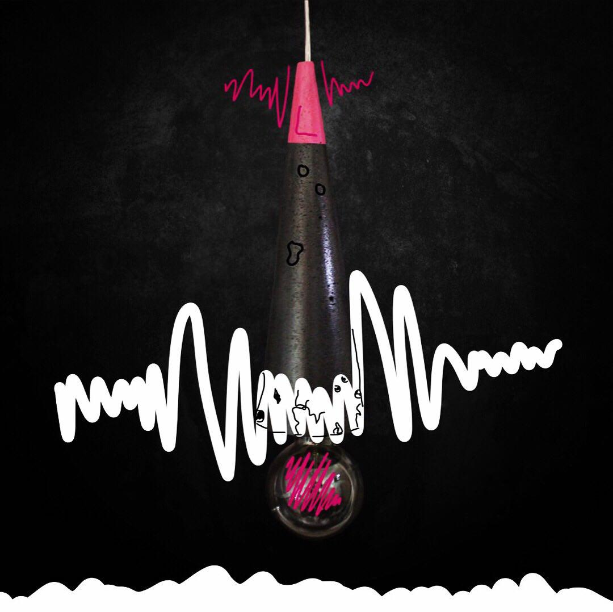

Описание товара
Краткое описание светильника
Модель LC50mm
Подробное описание товара
LC50mm одна из моих любимых моделей (смайлик). Сочетание черного и розового цвета просто шикарно и не может никого оставить равнодушным! Как на счёт эксплуатации самой люстры? Та легко! Вас не будет беспокоить та самая пылинка, которую так въелась в глаз, а сама уборка не доставит столько хлопот, как с обыкновенной люстрой их стекла/хрусталя/металла. И помните: весит она точно не больше самых привычных люстр. Для самого надежного крепления в люстру вмонитирован суперпрочный трос и к нему точно такие же крепежи.
Характеристики товара
- Ширина: макс - 100мм; мин - 10мм
- Высота: 200мм
| Украина | Европа | Россия |
|---|---|---|
| 1600 грн | 60 дол | 4600 руб |
| 60 дол | 4600 руб | 1600 грн |
| 4600 руб | 1600 грн | 60 дол |
| 2-3 недели | ||
Где?
Светильники из бетона можно представить в любом помещении начиная с ресторана заканчивая вашей любимой ванной у вас дома. Эта модель LT1m, напоминающая чем-то микрофоны, дополнит ваш интерьер и украсит его. Цвет и размер можно подобрать соответствующий вашему дизайну либо такой, какой вы нафантазировали.